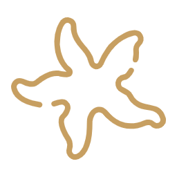
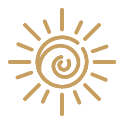
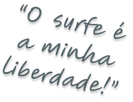
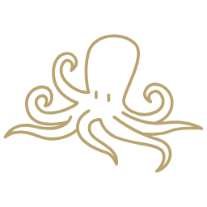
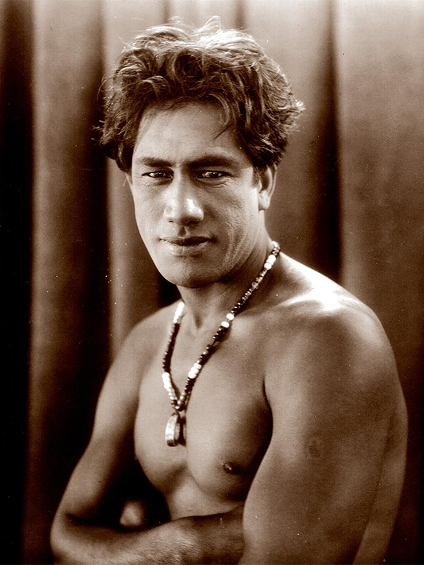
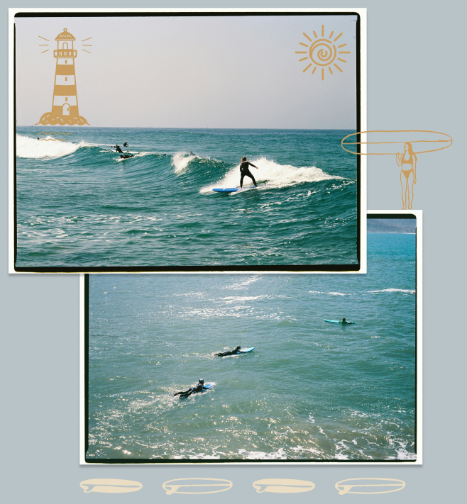

O surfe nasceu no coração da Polinésia não apenas como um esporte, mas como uma manifestação sagrada de harmonia entre o homem e a natureza.
O projeto The Surf Journey é um convite para explorar essa jornada simbólica. Mergulhamos na evolução de um estilo de vida que transcende as praias e se transforma em cultura. Aqui, celebramos a transição das pesadas pranchas de madeira para a tecnologia moderna, sem nunca perder a essência do "surf de alma": aquele momento em que o tempo para, o medo se dissolve e a calmaria (Akahai) assume o controle.
VER MAIS →



foi um nadador olímpico havaiano e é amplamente reconhecido como o "pai do surfe moderno". Nascido em Honolulu, destacou-se por sua habilidade no mar, conquistando cinco medalhas olímpicas (ouro e prata) entre 1912 e 1924, além de popularizar o surfe mundialmente, especialmente nos EUA e Austrália, agindo como um embaixador cultural do Havaí.
VER MAIS →The Surf Journey
No Havaí, Akahai significa gentileza e calmaria. É o espírito de agir com bondade e respeito, seja com as pessoas ou com o oceano. Para mim, essa palavra define a forma como encaro a vida e o mar.
Eu sou a Lola, estudante de ADS na São Paulo Tech School e caiçara de coração. O surfe entrou na minha história aos sete anos. Foi em cima de uma prancha rosa com estrelas azuis que aprendi que a calmaria é, na verdade, uma forma de força.
O projeto Akahai: The Surf Journey nasceu para unir minha paixão pelo mar com o mundo da tecnologia. Mais do que um sistema de dados, este é um espaço para resgatar a história, a simbologia e o estilo de vida do surfe.
VER MAIS →
Manobra e precisão.